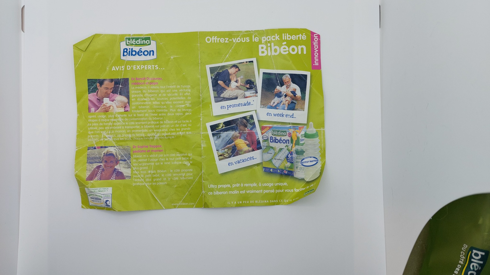
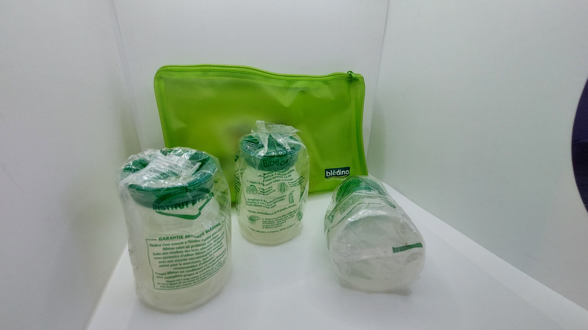
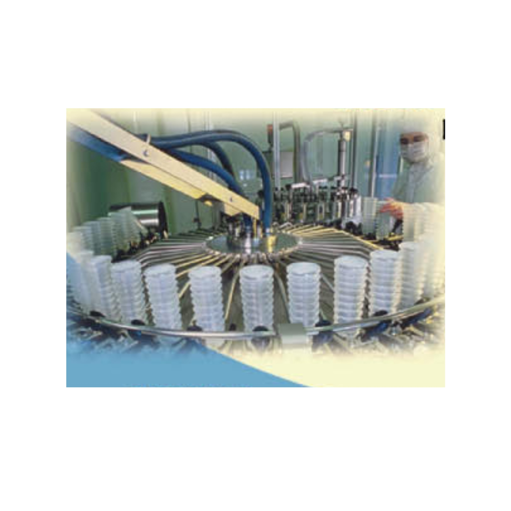
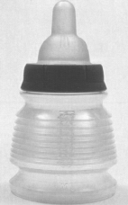
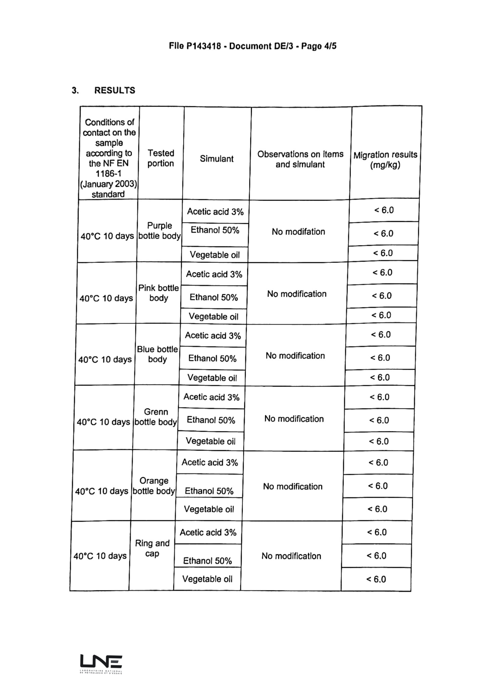
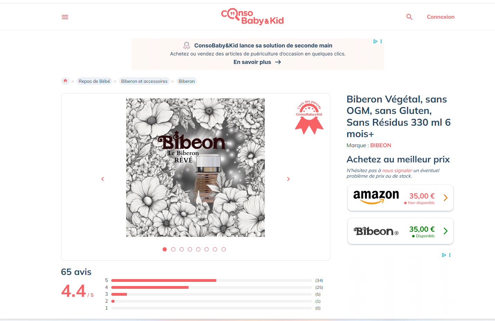
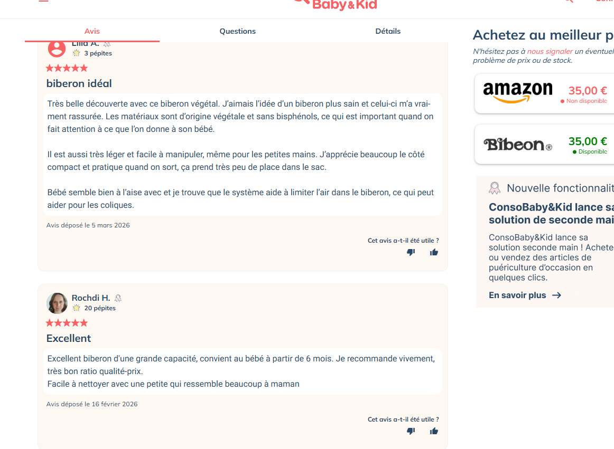

Parcours de l’inventrice
Suzanne de Bégon et BIBEON : trente ans de travail sur le biberon
Mon travail sur le biberon a commencé en mai 1996, quinze jours après la naissance de ma fille. Une difficulté très concrète de mère est devenue un parcours d’inventrice, puis un travail de fond sur les usages, les matériaux, la stérilisation et la sécurité des biberons.
Mai 1996 : une recherche née de l’expérience d’une mère
J’ai commencé à travailler sur le biberon en mai 1996, quinze jours après la naissance de ma fille. À l’origine, il ne s’agissait ni de bâtir une marque ni de prendre position dans un débat sanitaire. Je cherchais une réponse pratique aux contraintes rencontrées par les parents : préparer, transporter et utiliser un biberon sans s’encombrer de multiples accessoires.
Cette expérience personnelle a progressivement pris une dimension technique. Il fallait comprendre la forme du contenant, son pliage, sa fermeture, le comportement des matériaux, la protection de la tétine et les conditions permettant de proposer un biberon prêt à être utilisé.
Une invention brevetée, industrialisée et commercialisée
La première génération de Bibéon n’est pas restée à l’état de dessin ou de prototype. Elle a été brevetée, fabriquée et mise sur le marché au début des années 2000 dans le cadre d’une licence d’exploitation.
Les emballages, notices et photographies conservés de cette période montrent un produit commercial complet : biberons conditionnés, mode d’emploi, communication destinée aux parents et présentation du produit pour les promenades, les week-ends et les vacances.



Cette première version était destinée à un usage unique. Sa fermeture la condamnait volontairement après utilisation : l’ouverture forcée déformait le col et empêchait une réutilisation normale. Le produit devait donc être livré prêt à remplir, sans nettoyage ou stérilisation à effectuer par le parent.
Une question simple : que signifie réellement « stérile » ?
Lors du développement industriel, la question du procédé de stérilisation s’est imposée. L’oxyde d’éthylène m’a été présenté comme une méthode employée dans les établissements hospitaliers pour des biberons, tétines et articles de puériculture à usage unique.
Avant d’accepter ce procédé, j’ai cherché à connaître les règles nécessaires à sa mise en œuvre. J’ai alors découvert que la logique applicable à certains dispositifs médicaux ne pouvait pas être transposée sans examen à un objet destiné à recevoir l’alimentation d’un nourrisson.
J’ai refusé que mon biberon soit traité à l’oxyde d’éthylène. La version commercialisée a utilisé une autre méthode. Les détails contractuels de cette période relèvent de la sphère privée et n’ont pas vocation à être publiés.
Je ne voulais pas que le seul mot « stérile » suffise. Je voulais savoir par quel procédé cette stérilité avait été obtenue.
Sur de nombreux produits utilisés en milieu hospitalier, l’emballage indiquait la stérilité sans rendre immédiatement visible le procédé employé. Cette absence d’information a nourri mes demandes de preuves et mes démarches auprès des autorités.
Pendant plusieurs années, je n’avais ni la cartographie des fournisseurs ni les informations que les enquêtes révéleraient ensuite. Je distinguais difficilement ce que je savais, ce que je soupçonnais et ce que je demandais aux autorités de vérifier. L’absence de réponses a durci mon ton.
Je regrette certains mots, pas la question
Avec le recul, j’aurais dû défendre cette alerte avec davantage de diplomatie et séparer plus nettement les faits établis de mes inquiétudes. Mon attachement aux nouveau-nés et ma colère devant le silence ont parfois pris le dessus.
Je ne regrette toutefois ni d’avoir demandé des preuves, ni d’avoir posé la question centrale : la sécurité microbiologique d’un produit suffit-elle à répondre à toutes les questions de sécurité chimique ?
2011–2012 : l’alerte devient publique et l’IGAS enquête
Le 17 novembre 2011, l’affaire devient publique dans la presse. Une mission de l’Inspection générale des affaires sociales est ensuite chargée d’examiner le cadre juridique de la stérilisation à l’oxyde d’éthylène des biberons, tétines et téterelles utilisés dans les établissements de santé, ainsi que l’ampleur de cette pratique.
Le rapport public RM2012-032P consacre une partie aux alertes répétées adressées aux autorités et décrit mon rôle dans le déclenchement du dossier.
« Le rôle de lanceur d’alerte est joué, dans ce dossier, principalement par Mme Suzanne de Bégon. »
Cette reconnaissance n’est pas utilisée ici comme un argument médical. Elle explique simplement pourquoi je travaille depuis longtemps sur la différence entre nettoyage, désinfection, stérilisation, sécurité microbiologique, sécurité chimique et conformité des matériaux destinés au contact alimentaire.
Du biberon à usage unique au BIBEON durable et réutilisable
Après la première génération, j’ai poursuivi le développement du produit avec un objectif différent : sortir de l’usage unique et concevoir un biberon durable, réutilisable, compact et adapté aux repas nomades.
Cette transformation a nécessité de revoir les matériaux et les assemblages. Le système de tétine bi-injectée de la première génération a été abandonné. Le BIBEON actuel comporte :
- un corps pliable en polypropylène destiné au contact alimentaire ;
- une tétine indépendante en silicone alimentaire ;
- une bague et un capuchon fabriqués dans une matière d’origine végétale ;
- une géométrie modifiée pour supporter plusieurs centaines de pliages et dépliages.
Le corps ne pouvait pas être réalisé dans la même matière végétale : les matériaux étudiés ne permettaient pas d’obtenir la souplesse et l’endurance nécessaires au fonctionnement des soufflets. Le polypropylène a été retenu pour répondre à cette contrainte mécanique.

Un biberon doseur et nomade
Le BIBEON actuel ne se contente pas de se replier. Lorsqu’il est propre, parfaitement sec et correctement fermé, il transporte directement la dose de lait en poudre. Il remplace ainsi la boîte doseuse séparée et évite le transvasement à l’extérieur.
Sa conception vise également à limiter les contacts avec l’intérieur du biberon et avec la tétine pendant les manipulations. Le relief des soufflets participe au mélange et aide à désagréger les grumeaux sans casse-grumeaux séparé.
Replié avant le repas puis replié de nouveau après utilisation, il conserve le même petit encombrement à l’aller comme au retour.
Les essais de migration réalisés par le LNE
Les différentes pièces du BIBEON actuel ont fait l’objet d’essais de migration globale par le Laboratoire national de métrologie et d’essais.
La page de résultats communiquée indique des essais réalisés pendant dix jours à 40 °C sur plusieurs corps colorés ainsi que sur la bague et le capuchon, avec trois simulants : acide acétique à 3 %, éthanol à 50 % et huile végétale.
Pour chaque pièce et chaque simulant, le résultat indiqué est inférieur à 6,0 mg/kg, sans modification observée.
Cela correspond à moins de 6 parties par million, soit moins de 0,0006 % en masse.
La formulation publique la plus transparente est : « aucun résidu détecté au seuil de 6 mg/kg ». Le symbole « < 6 » signifie que la méthode ne distingue pas strictement zéro d’une éventuelle valeur située sous ce seuil.

Pour l’intégrateur : ajouter ici le rapport LNE complet en PDF dès qu’il est disponible, avec un bouton « Consulter le rapport LNE complet ».
BIBEON évalué par les parents
En 2023, la marque BIBEON a été déposée de nouveau et le produit a été présenté en ligne, notamment sur Amazon et Consobaby & Kid.
Au 4 août 2026, la fiche publique Consobaby & Kid affiche 65 avis et une note moyenne de 4,4 sur 5 : 34 évaluations à 5 étoiles, 25 à 4 étoiles, 5 à 3 étoiles, 1 à 2 étoiles et aucune à 1 étoile.
Les avis les plus récents, affichés en premier par la plateforme, ont été publiés en février et mars 2026. Ils évoquent notamment le format compact, la légèreté, la contenance, l’usage nomade et la facilité de nettoyage. Certains témoignages rappellent aussi qu’une forme aussi différente demande un court temps d’adaptation.


2026 : un nouveau site pour expliquer le produit
Le site actuel n’est pas présenté comme une nouvelle naissance de BIBEON. Il a été créé en 2026 pour expliquer plus clairement un produit différent des biberons rigides : dosage lorsque la poudre est versée en premier, protection de la tétine, nettoyage, séchage, matériaux, résultats d’essais et usage pendant les déplacements.
D’autres formes de biberons compressibles sont en cours de protection et de développement. Aucun détail technique n’est rendu public avant les dépôts nécessaires.
Ce que cette expérience apporte aux parents
Cette histoire n’a pas vocation à placer ma vie au centre du site. Elle apporte seulement un éclairage sur la méthode avec laquelle les contenus sont rédigés.
Les articles de BIBEON s’appuient sur les recommandations officielles, les textes réglementaires, les rapports publics, les essais disponibles et près de trente ans d’expérience dans la conception de biberons.
Leur objectif reste simple : aider les parents à mieux comprendre la préparation, le transport, le nettoyage, les matériaux et l’utilisation quotidienne du biberon de leur bébé.
Documents et sources
- Rapport public IGAS RM2012-032P : consulter le PDF officiel.
- Archives publiques : emballages, notices et photographies historiques de Bibéon.
- Extrait du rapport LNE P143418, page 4 sur 5, reproduit avec les résultats communiqués.
- Captures de la fiche publique Consobaby & Kid, relevées le 4 août 2026.
Les accords, contrats et correspondances privés ne sont pas publiés. Les éléments commerciaux anciens non documentés par une source publique ne sont pas utilisés comme arguments d’autorité.